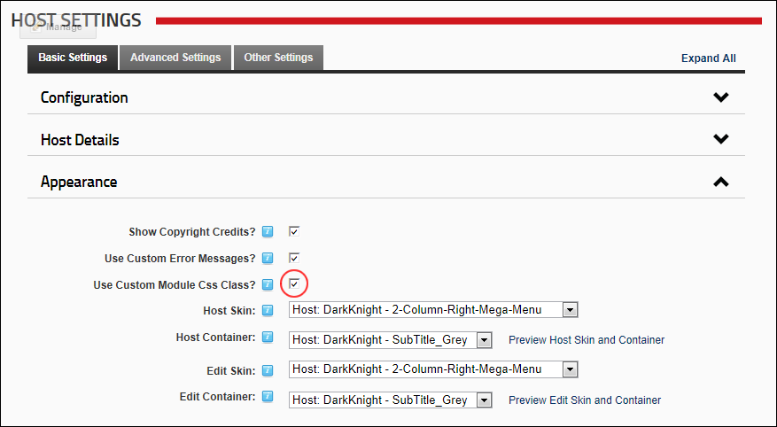

- Mark
 the check box to enable custom CSS classes.
the check box to enable custom CSS classes. - Unmark
 the check box to disable custom CSS classes.
the check box to disable custom CSS classes.
How to enable a custom CSS class based on the module definition to be rendered. This can be used be skin designers to apply specific CSS styles to specific module types.
